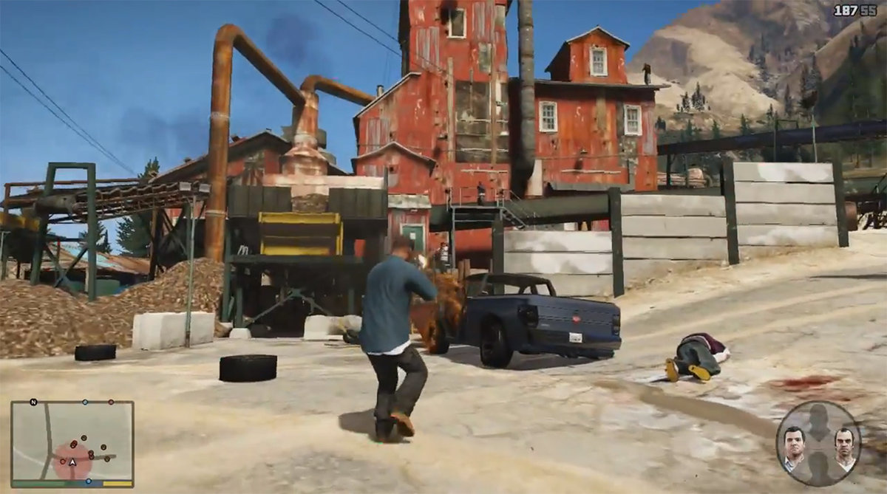
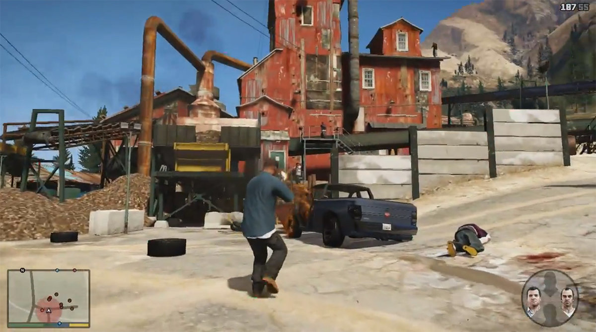

Grand Theft Auto V is an action-adventure game played from either a third-person or first-person perspective. Players complete missions—linear scenarios with set objectives—to progress through the story. Outside of the missions, players may freely roam the open world. Composed of the San Andreas open countryside area, including the fictional Blaine County, and the fictional city of Los Santos, the world is much larger in area than earlier entries in the series. It may be fully explored after the game's beginning without restriction, although story progress unlocks more gameplay content.
Players use melee attacks, firearms and explosives to fight enemies, and may run, jump, swim or use vehicles to navigate the world. Should players take damage, their health meter will gradually regenerate to its halfway point. Players respawn at hospitals when their health depletes.If players commit crimes, law enforcement agencies may respond as indicated by a "wanted" meter in the head-up display (HUD). Stars displayed on the meter indicate the current wanted level. Your aim is to complete the gameplay and avoid getting busted by the cops.
GTA V system requirements
- CPU: CPU: Intel Core 2 quad CPU / AMD equivalent or higher
- GPU: NVIDIA 9800 GT 1GB / AMD HD 4870 1GB or better
- RAM: 6 GB of memory
- HDD: 65 GB of free space
- OS: Windows 8/8.1 64 Bit, Windows 7 64 Bit Service Pack 1
- DirectX: 10.0 or higher
 
